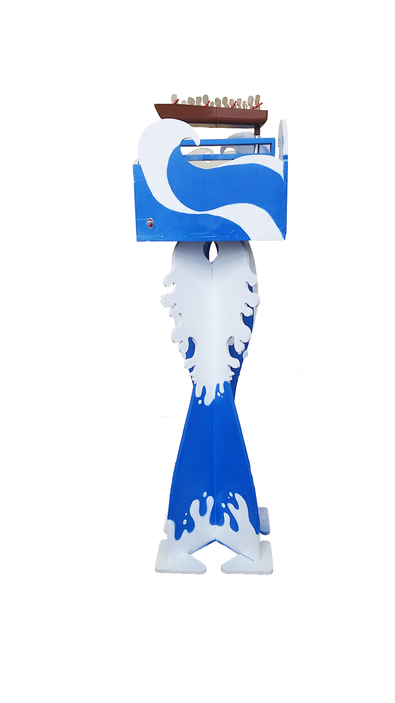
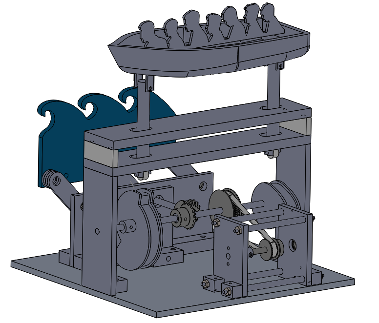
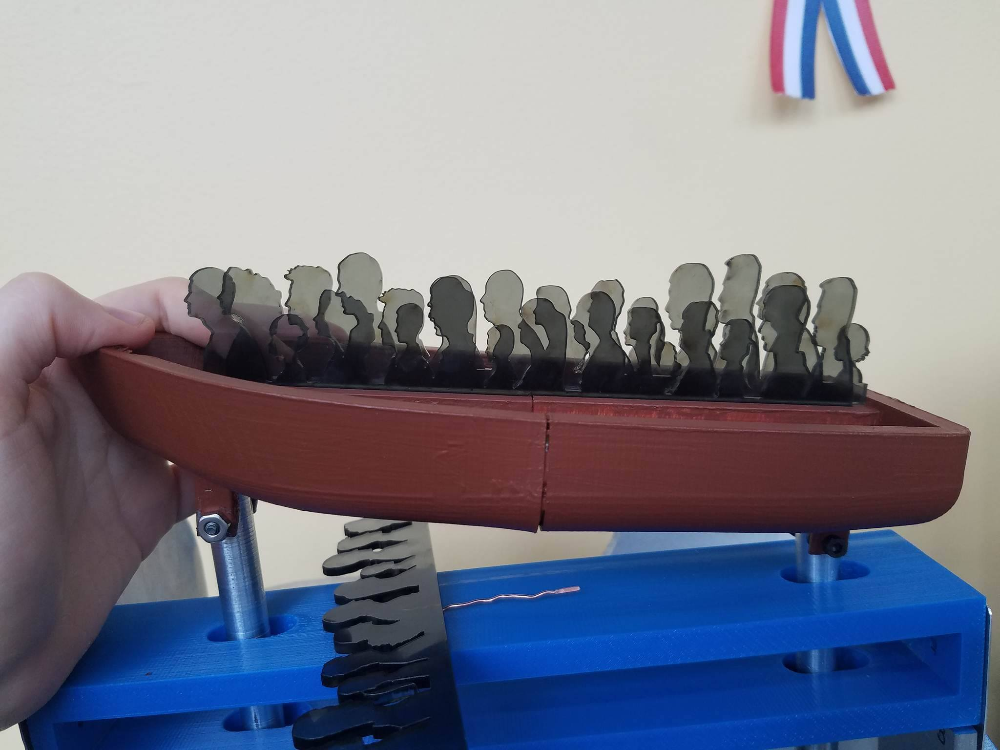

November-December 2016
Introduction to Mechanical Prototyping
This class had a few weeks of instruction on different types of mechanical joints, fasteners, gearboxes, etc. and then we spent the remainder of the semester in teams of 5-6 students designing and building two fully functional mechanical sculptures. The sculptures had to include one of each joint, fastener, and structure type we had studied, and loosely fit into the “aquatic” theme.
Our second sculpture of the semester was named “Rough Seas” and was intended to bring attention to the Syrian refugee crisis through a more serious, but still artfully designed mechanical movement sculpture. This featured a boat rocking back and forth with rockers riding along two cams, one in the front and one in the back. The front cam was larger, and included a large cutoff instead of a smooth, continuous shape that created a sudden drop to reflect the motion of a boat cresting a large wave. We were able to model this movement fully in CAD so that we could create a cam shape that would give us the specific motion profile we wanted. In front of the boat was a translucent wave that moved in the opposite direction to the boat to give the illusion of the boat moving forwards. The wave was controlled by a four-bar linkage system that allowed it to move in a clockwise direction and then hide behind the base to reset and continue the cycle.
For this project I designed and built the base plate with the mounting pieces for all the different mechanisms, the wave piece that attached to the four-bar linkage, the central axle components, and the cam follower constraints. Overall, I did a lot of integration between the different parts. I added parts and made adjustments to make the different subsystems fit together. I also picked out a belt by creating a sketch between the two pulleys and using different manufactured belt lengths to drive the precise distance between these two pulleys. On the artistic side, I painted the boat and helped spray paint the main base structure with the help of stencils carefully drawn by a teammate.
  